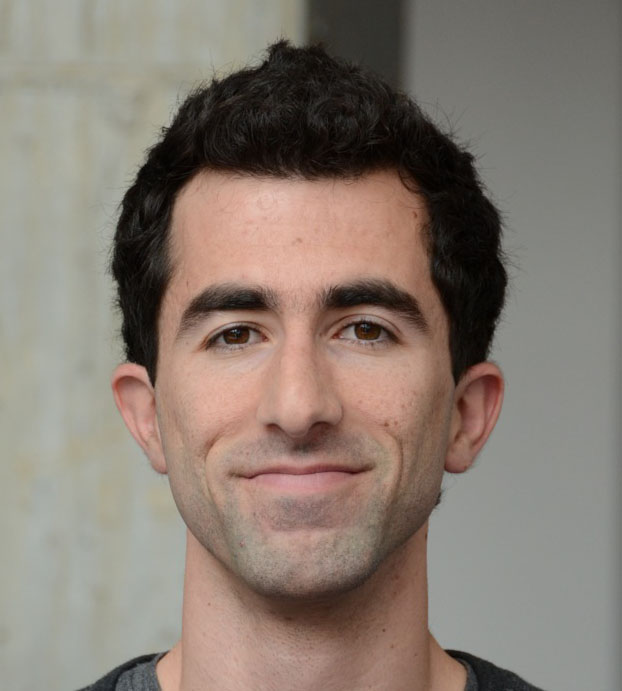

|  | Sahand N. Negahban
|
About
The focus of my research is to develop theoretically sound methods, which are both computationally and statistically efficient, for extracting information from large datasets. A salient feature of my work has been to understand how hidden low-complexity structure in large datasets can be used to develop computationally and statistically efficient methods for extracting meaningful information for high-dimensional estimation problems. My work borrows from and improves upon tools of statistical signal processing, machine learning, probability and convex optimization. Recently I have also been applying these ideas to outcomes research in collaborations with the Yale Center for Outcomes Research and Evaluation. Prior to Yale I worked with Prof. Devavrat Shah at MIT as a postdoc and Prof. Martin J. Wainwright at UC Berkeley as a graduate student.
Publications
- Comparison of Machine Learning Methods With National Cardiovascular Data Registry Models for Prediction of Risk of Bleeding After Percutaneous Coronary Intervention
B. Mortazavi, E. Bucholz, N. Desai, C. Huang, J. Curtis, F. Masoudi, R. Shaw, S. Negahban, and H. Krumholz. JAMA Network Open. 2019.
- Warm-starting Contextual Bandits: Robustly Combining Supervised and Bandit Feedback
C. Zhang, A. Agarwal, H. Daumé III, J. Langford, and S. Negahban. ICML. 2019.
- Sparse interpretable estimators for cyclic arrival rates
N. Chen, D. Lee, and S. Negahban. Annals of Statistics. 2019.
- Learning from comparisons and choices
S. Negahban, S. Oh, K. Thekumparampil, and J. Xu. JMLR. 2018.
- Restricted Strong Convexity Implies Weak Submodularity
E. Elenberg, R. Khanna, A. Dimakis, and S. Negahban. Annals of Statistics. 2018.
- Deep supervised feature selection using Stochastic Gates
Y. Yamada, O. Lindenbaum, S. Negahban, and Y. Kluger. preprint. 2018.
- Prediction of Adverse Events in Patients Undergoing Major Cardiovascular Procedures
B. Mortazavi, N. Desai, J. Zhang, A. Coppi, F. Warner, H. Krumholz, and S. Negahban. IEEE Journal of Biomedical and Health Informatics, 2017.
- On Approximation Guarantees for Greedy Low Rank Optimization
R. Khanna, E. Elenberg, A. Dimakis, J. Ghosh, and S. Negahban. ICML. 2017.
- Scalable Greedy Feature Selection via Weak Submodularity
R. Khanna, E. Elenberg, A. Dimakis, S. Negahban, and J. Ghosh. AISTATS. 2017.
- Analysis of Machine Learning Techniques for Heart Failure Readmissions
B. Mortazavi, N. Downing, E. Bucholz, K. Dharmarajan, A. Manhapra, S. Li, S. Negahban, and H. Krumholz. Circulation: Cardiovascular Quality and Outcomes. 2016.
- Iterative Ranking from Pair-wise Comparisons
S. Negahban, S. Oh, and D. Shah. Operations Research. 2016.
Presented in part at Neurips.
- Individualized Rank Aggregation using Nuclear Norm Regularization
Y. Lu and S. Negahban. Allerton Conference. 2015.
- A unified framework for the analysis of regularized \(M\)-estimators
S. Negahban, P. Ravikumar, M. J. Wainwright and B. Yu. Statistical Science. 2012.
Technical Report Number 797
Oral Presentation given at Neurips 2009: Slides
- Stochastic optimization and sparse statistical recovery: An optimal algorithm for high dimensions
A. Agarwal, S. Negahban, and M. J. Wainwright. Neurips. 2012.
- Learning Sparse Boolean Polynomials
S. Negahban and D. Shah. Allerton. 2012.
- Scaling Multiple-Source Entity Resolution using Statistically Efficient Transfer Learning
S. Negahban, B.I.P. Rubinstein, and J. Gemmell. CIKM. 2012.
- Noisy matrix decomposition via convex relaxation: Optimal rates in high dimensions
A. Agarwal, S. Negahban, and M. J. Wainwright. Annals of Statistics. 2012.
Presented in part at ICML.
- Fast global convergence of gradient methods for high-dimensional statistical recovery
A. Agarwal, S. Negahban, and M. J. Wainwright. Annals of Statistics. 2012.
Oral presentation given at Neurips 2010.
- Restricted strong convexity and weighted matrix completion: Optimal bounds with noise
S. Negahban and M. J. Wainwright. JMLR. 2012.
- Estimation of (near) low-rank matrices with noise and high-dimensional scaling
S. Negahban and M. J. Wainwright. Annals of Statistics. 2011.
Appeared in part at ICML.
- Simultaneous support recovery in high dimensions: Benefits and perils of block \(\ell_1/\ell_\infty\)-regularization
S. Negahban and M. J. Wainwright. IEEE Transactions on Information Theory. 2011.
Technical Report 774
Appeared in part at Neurips 2008. Joint support recovery under high-dimensional scaling: Benefits and perils of \(\ell_{1,\infty}\)-regularization.
Courses
Stat 679A: High-dimensional Estimation
Stat 251: Stochastic Processes
Stat 362: Computational Tools in Data Science
Stat 669: Statistical Learning Theory